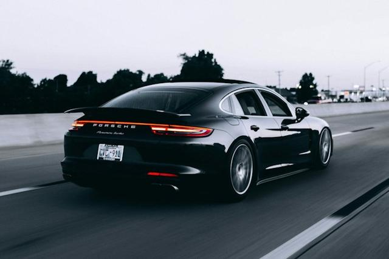
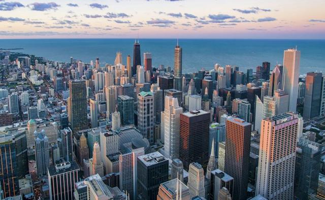

Automotive ad · MOVA Studio · 12.4k uses
Night Drive
A low tracking shot, light streaks, then a slow hero reveal. Turns one photo into a moody 15-second spot.
Low tracking shot
Camera glides beside, wheel height

Light streaks
Speed ramp, city lights smear

Hero reveal
Crane down, headlights on beat
You'll need 1 photo
A car or product, side or three-quarter view